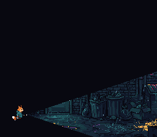
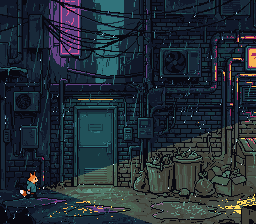

|
OpenSNES
Modern Open-Source SNES Development SDK
|
|
OpenSNES
Modern Open-Source SNES Development SDK
|

Kit stands in a dark back alley with a torch. The beam is a window driven by HDMA: its left edge changes every scanline, so the window is a cone that leaves the torch and opens to the right. Press A, X or B and it masks background layers — the alley, the rain in front of it, or both; press Y and it marks where colour math lights the picture instead.

Ported from PVSnesLib's "Window" example; the colour-math mode is its "TransparentWindow" example (by Digifox), adding instead of subtracting.
| Button | Action |
|---|---|
| A | The beam on BG1 (the alley) only: the rain falls everywhere |
| X | The beam on BG2 (the rain) only: the alley is lit, the rain shows where the torch catches it |
| B | The beam on both BG1 and BG2 (the boot state) |
| Y | Light the beam: nothing is clipped, colour math brightens both BGs inside it |
Then open window.sfc in luna (luna-gui window.sfc) or any emulator.
The SNES PPU has two hardware windows – regions defined by a left and a right X coordinate. These windows can mask (hide) portions of any background layer or sprite layer. Window operations cost zero CPU time because they are handled entirely by the PPU.
A single window is always a horizontal band. But by changing the left/right boundaries every scanline using HDMA, you can create any shape – circles, cones, or custom silhouettes.
This example uses two HDMA channels:
buildBeam() computes the two tables at boot from the shape they draw. The torch's tip is at (44, 187); the cone widens by one line every three pixels:
The beam lines use repeat mode (bit 7 set in the line count) because each scanline needs a different value. Non-repeat mode would write once and hold, which does not work when the shape changes per line.
By default, TMW (main screen window at $212E) hides pixels inside the window. The code sets the invert flag in W12SEL ($2123) so that pixels outside the window are hidden instead – revealing only the beam.
Kit is a sprite, and the window is not enabled on sprites (WOBJSEL and TMW's OBJ bit stay 0), so he stands out in the dark whatever the beam masks.
When you press A/X/B, the code:
This register controls Window 1 enable and inversion for BG1 and BG2:
| Bit | Purpose |
|---|---|
| 0 | BG1 Window 1 Invert |
| 1 | BG1 Window 1 Enable |
| 4 | BG2 Window 1 Invert |
| 5 | BG2 Window 1 Enable |
Setting both the enable and invert bits for a BG makes pixels outside the window invisible, revealing only the windowed region.
Pressing Y keeps the same HDMA tables and changes what the window is for:
| Register | Value | Meaning |
|---|---|---|
| W12SEL / TMW | $00 / $00 | no layer is clipped |
| WOBJSEL | $20 | the colour window is window 1, not inverted: the beam |
| CGWSEL | $10 | colour math only inside the colour window, from the fixed colour |
| CGADSUB | $03 | add (bit 7 clear), on BG1 and BG2 |
| COLDATA | 6, 5, 2 | the warm colour added |
The masking modes call colorMathDisable() first, so A, X or B after Y clips again with no light left over. The same pattern draws a shadow (subtract instead of add) or the darkened box behind a dialogue.
| Region | Content |
|---|---|
| $0000 | BG1 tilemap (32x32) |
| $0400 | BG2 tilemap (32x32) |
| $1000 | BG1 tiles: the alley, 889 tiles (4bpp) |
| $5000 | BG2 tiles: the rain (4bpp) |
| $6000 | Kit (OBJ) |
A BG's tiles start on a $1000-word boundary (BG12NBA keeps the top four bits of the address).
| File | Purpose |
|---|---|
| main.c | The beam tables, window setup, input loop, the falling rain |
| res/alley.png | BG1, the alley (palette slot 0) |
| res/rain.png | BG2, the rain on nothing (palette slot 1) |
| res/kit.png | Kit holding his torch, 32x32 |
| res/*.png.toml | the import settings (opensnes-tileset, opensnes-sprite); the build converts and links them, res/<name>.inc declares the symbols |
| Makefile | LIB_MODULES := console sprite dma input background window hdma colormath |
The alley and Kit with his torch come from PixelLab, the rain is drawn by devtools/art_assets/build.py (CC0, assets/neo-lumen/README.md).
console, sprite, dma, input, background, window, hdma, colormath (LIB_MODULES in the Makefile).